| あなたのパワースポットって誰ですか？: 波動アップすればパワースポットがやってくる | |
| 神岡シンゴリス | |
| Creators Publishing (2014) | |
はじめに
パワースポットと聞くと、あなたはどこかの場所を思い浮かべるかもしれません。
あるいは、有名な神社へ行ってお願いごとをすることが、パワースポットのご利益にあずかることだと思っているかもしれませんね。
突然ですが...。
パワースポットへ行って願いを叶えてくださいと祈り、その願いは叶ったでしょうか？
もしそうでなかったなら、この本があなたの力になれるかもしれません。
なぜなら、今までと違った方法に気づいてもらえるからです。
私はハワイに呼ばれる心理カウンセラーとして、年２回ほどハワイのスピリチュアルスポットへ行っています。
日本国内においても、東京近郊にお住まいの方を中心に屋外セッションを行い、波動アップの秘訣をお伝えしています。
地方や海外にお住まいの方には、スカイプやLINEを使って、同様の効果が得られるセッションを行っています。
この本は、パワースポットの使いこなし方を理解すると同時に、あなた自身がパワースポットになっていただくことを目的として書かれています。
実は、パワースポットとは、特定の場所のことを言うのではありません。
人や動物にも当てはまるのです。
パワースポットのような存在である誰かと出逢うことで、人生に大きな転換がもたらされます。
あなたも、どこかで聞いたことがありませんか？
「誰と出逢うかで、人生は大きく変わる」と。
本書のタイトルに、『あなたのパワースポットって誰ですか？』とあるように、私は、あなたに素敵なパートナーと出逢ってもらいたいと思っています。
それは、恋愛に限ったことではなく、友人でもビジネスでも同じです。
人生を変えるほどインパクトがある出逢いをすると、はっきりとわかることがあります。
何をやるかではなく、誰とやるか。誰と出逢うか、の大切さです。
土地の持つスピリチュアルなパワーを体験するのと同じことが、人との出逢いにも言えるのです。
先ほど、屋外セッションで波動アップの秘訣を伝えていると言いましたが、実際にワークをやってみると不思議なことが起こります。
たとえば、肩こりがひどかったのが、すーっと楽になってしまったりするんです。
二〇一四年五月にハワイ島のハワイ火山国立公園へ行った時のことです。
公園の中にサーストン・ラバ・チューブという溶岩洞窟があるのですが、この洞窟の中で、手から細い糸状のもの（オーラ？）が出るのを目にしました。
同行した者の中には、手に白い水かきのようなものができた者もいました。
その後、どうなったか。
体中が軽くなってスッキリしたと同時に、新たなエネルギーで満たされるのを実感したのです。
このように、人間の体に土地が与える影響は大きいことがわかります。
ということは、現在住んでいる場所も、人生に大きく影響してると言えそうです。
私は知り合いに不動産関連の経営者が多いので、こっそり話を聞くことがあるのですが、住む土地によって運気に影響があるようです。
すぐに引っ越すことができなくても、このような情報を知っておけば、家探しをする時に参考になるでしょう。
このような情報を知らなかったとしても、今できることがあります。
たとえば、自分の部屋をパワースポットにしてしまうことです。
波動アップすると、パワースポットがやってきます。
「フォー・ユー」を投げかけることによって、思ってもみない好循環スパイラルに導かれていきます。
私自身が体験してきたパワースポットについて、これからあなたにお伝えしようと思います。
あなたは、誰と出逢うために生まれてきたのだと思いますか。
二〇一四年夏吉日 神岡シンゴリス
第１章 オープニング
（１）芸能人がハワイへ行く理由
ズバリ！ 芸能人がハワイへ行く理由ですが、よくわかりません（笑）
ただ、芸能界という特殊な世界のことを考えれば、いくつか思い当たることがあります。
売れる芸能人はごく一部であり、それらの芸能人は、間違いなく運のいい人たちです。
彼らはよく知ってるのではないでしょうか。目に見えないものから応援されることがどれほど大切であるかを。
たとえば、芸能界にデビューするには、オーディションで合格したり、キーパーソンとなるプロデューサーなどから見出してもらわなければなりません。
つまり、何かしらのキッカケがあるからこそ、世に出られるわけです。
選ばれる人にならなければ、仕事は来ません。
仮にデビューできたからといって、誰もが売れるわけではありません。
売れるのはほんの一部であり、そのような人たちは熱狂的なファンから選ばれるからこそ人気が出て売れていくのです。
これは音楽の世界に限らず、どの業界においても共通しています。
私は１３年間レコード会社にいて、売れるアーティストと売れないアーティストを見てきました。
どれだけ歌唱力が高くても売れない場合がありますし、逆に歌があまり上手でなくても売れる場合があります。
この差は、一体どこにあるのでしょうか？
毎年、年末になると芸能人がハワイへ行くニュースが流れます。
なぜハワイなのか？ あなたは考えたことがありますか。
きっとハワイには運を良くする何かがある。私は、このように思えて仕方がありません。
芸能人は、芸能界という浮き沈みが多い世界で生きているため、スピリチュアルな世界に頼りたくなるというのも理由のひとつかもしれません。
あるいは、ハワイは日本から近く、比較的安全な海外というのも納得できる理由です。
しかし、最も大きな理由は、彼ら芸能人は、実力には運が伴うということをよく知っているからではないでしょうか。
そこにハワイの波動が、大きく関係しているのかもしれません。
では、運という目に見えないものから応援されるにはどうすればいいでしょうか。
同じことをしても、運が悪ければ思うようにいきません。
彼らは、努力では叶わない世界があるのを知っているのです。
なぜなら、実力以上のものがうまく働いて、大きな結果を出す人がいるからです。
感性が豊かな芸能人だから――ミュージシャンに限らず俳優、お笑い芸人など、自己表現の世界に生きる者は、表現者ゆえにわかってしまうことがあるように思うんです。
目に見えないものから応援されるために必要なこととは？
また、目に見えるものからも、応援されたり協力を仰ぐには何が必要なのか。
キッカケを活かし、良い流れを作り出すにはどうしたらいいのか。
実力以上のものに味方してもえたら鬼に金棒です。
芸能人がハワイへ行く理由とは、ズバリ！ ハワイの波動に触れて、運を良くするためではないでしょうか。
ハワイは島全体が波動の島と言われている通り、ハワイへ行くと内なるエネルギーを満たすことができますし、余計なものを浄化することも可能です。
つまり、チャージと浄化によって、自分をバージョンアップさせることができるんです。
芸能人は運という実力以上のものが働く世界があることを、誰よりも深く理解しています。だからこそ、ハワイの心地よい波動を浴びに行く――このような推測が働くわけです。
ヘイアウや溶岩洞窟、イルカの群れ、ホヌ（海亀）など。自然の様々なものから影響を受けることによって、知らぬ間にパワーアップしている。
休みながらパワーアップできるのが、ハワイの魅力かもしれません。
（２）パワースポットめぐりの効能と注意点
あなたは、パワースポットめぐりはお好きでしょうか。
有名なパワースポットというと、伊勢神宮や出雲大社、伏見稲荷大社、神田明神などが思い浮かぶかもしれません。
神社や寺だけではなく、他にも波動が高い土地はいくつもあります。
もちろん、ハワイにもパワースポットが無数にあります。
パワースポットの効能は、土地が持つ高い波動を浴びることによってパワーが得られることです。まさに読んで字の如しのパワースポットですが、それだけではありません。パワーをチャージしながら、浄化も同時にできるのです。
パワースポットは、長い年月をかけて守られてきた場所です。
行ってみるとわかりますが、波動が高い土地というのは、清涼感があって凛とした佇まいを持っています。人が手をかけて大切に守ってきていることも感じるでしょう。
本当は、パワースポットとは、何かを願ったりご利益を期待して行くところではないのかもしれません。
むしろ尊敬や感謝の念を持ってご挨拶に行く、と捉えたほうがいいのかなと思います。
パワースポットへ行ったときの注意点は、ゴミを散らかさないこと。
「そんなこと、しませんよ！」と思うかもしれませんが、ゴミとは、物質のゴミだけではありません。心の中のゴミも同じです。
つまり、我欲（エゴ）で散らかさないことです。ご利益を期待して「叶わない」と文句を言うのは、心のゴミを散らかす態度ではないでしょうか。
長い年月をかけて守られてきた場所なので、パワースポットには多くの人たちの思いが詰まっています。
その場所を大切にしてきた人たちの思いを受け取ることが、パワースポットで注意したい点と重なり合います。
ハワイなら、木の実や溶岩の欠片などを持ち帰らないこと。木に文字を書き込んだり、ペトログリフに書き込んだりしないこと。
海岸で数個の貝殻を持ち帰る程度なら可愛いものです。
そこを守ってきた人たちの大切な思いに応えて、真摯に振る舞うことが必要なのです。
ちなみに、ハワイには、ホヌ（HONU）というアオウミガメがいます。
この亀は守り神の化身のひとつとして大切にされています。絶滅の恐れのある種として、米国のハワイ州法で保護されています。触れることはもちろん、２メートル以内に近づいてはいけないと法律で定められています。
ホヌは、人が危害を加えないことを知っているからでしょうか。海岸で安心してスヤスヤ寝ている姿は、本当に可愛くてたまりません。見ているこちら側まで心が温かくなってきます。
ハワイでシュノーケリングをした時、こんなエピソードがありました。
なんと！ 目の前にホヌがザバーンと顔を出したのです。「これ以上、近づいてはいけない！」と、慌てて離れたことがありました。
ホヌと同じく、可愛いのがイルカちゃんです。イルカはとてもフレンドリーな存在で、人間を喜ばせようと空中でクルックルッと跳ねてくれます。キュッキュッと鳴く声は近くで聞いてみるとたまりません。
こんなに幸せな気持ちになれることに対して、人間の欲（エゴ）で汚してはいけないと思うのです。
相手が人間でも動物でも、土地でも同じことが言えます。
自分を心から信用してくれていると感じると、ありがたい思いが胸の中に湧いてきます。
安心して存在している自然環境を、一人ひとりが守っていく。
この意識をもって心で触れる場所、それがパワースポットです。
唯一、手で触れられるのは、自然に生えている木ということになりますが、この話は後ほど出てきますので、お楽しみに。
波動が高い場所は、土地に限らず、海や海岸なども含まれます。
パワースポットは気の流れが良いので、心から幸せな気持ちが溢れてきます。
高い波動は調和を生み出し、害を及ぼすものを遠ざけていきます。
（３）スピリチュアル写真ギャラリー
◇ハワイ島・ワイコロアのペトログリフ
ペトログリフとは、文字を持たない古代ハワイアンが記録を残すために使っていた絵文字です。石に見えるかもしれませんが、溶岩に刻まれており、宇宙人との交信手段であったという説もあります。
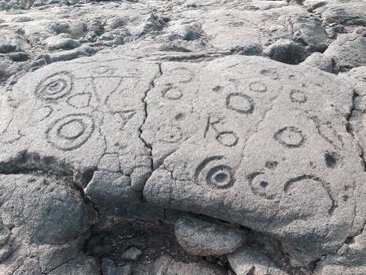
◇ハワイ火山国立公園の木に生えている尻尾
私が触ってるのは、まるで犬の尻尾みたいな手触りの植物です。ハワイ火山国立公園内のサーストン・ラバ・チューブを出たところで出会いました。周りには妖精たちが跳ねまわってるかのようでした。
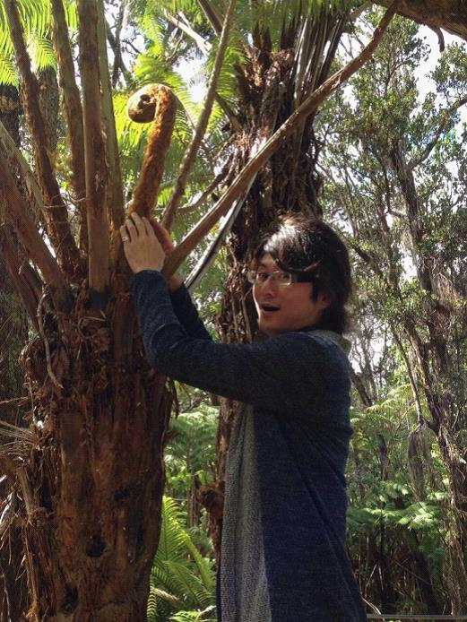
◇オアフ島でホヌと遭遇して幸せ気分
シュノーケリングをした時の模様です。船にホヌが近づいてきてくれました。大きな亀さんが海上でプハァ～ッと顔を出す姿は、思わず全員が笑顔になってしまう魅力があります。ホヌさん！ ありがとう！
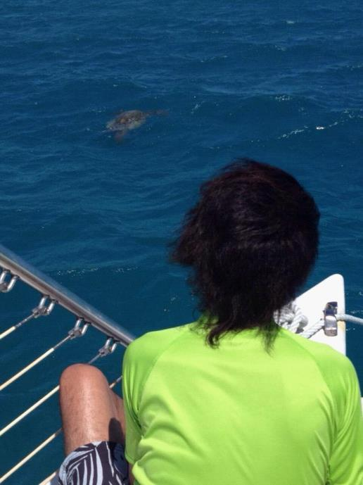
第２章 土地の持つスピリチュアルなパワー
（１）ハワイでのマル秘体験
ハワイに招待されて行くようになって、衝撃的な体験をしてきました。
なんといっても驚きの体験は、最初に行った時にＵＦＯを目撃してしまったことです。夜空に三角形を描いて動くサーチライトのようなまばゆい光は、今でも記憶の中にしっかり残っています（詳しくは、私の著書『スピリチュアル美肌革命』の中に書いてありますのでご覧ください）。
ハワイへ行くたびに、小鳥や動物たちが寄って来ます。どこへ行っても可愛い姿で近寄ってきてくれますので、人間に対する警戒心について考えさせられます。
小鳥や動物たちが、人間が危害を加えないと知っているのは、これまでの賜物であるはずです。
いじめたり、からかったり、迫って触ろうとしたりする人がいなかったということです。
ルールを守り、野生動物を大切にしようとする人たちの思いが、そこに現れていることがわかります。
その現れが、毎朝バルコニーに来る珍しい色をした小鳥さんや、先ほどのホヌ、イルカちゃんしかり。
ハワイという土地は人を選ぶと聞いたことがありますので、うれしい現象が起こるたびに、敬意と感謝と喜びを感じています。
ちなみに、本書の表紙画像を見ていただくと、私をモチーフとした姿の周りに、人間に加えて、小鳥や動物たちの姿が見てとれます。
この中には、ＳＫＹプロデュース（私が代表を務める会社）のメンバーの飼っていた小鳥や猫の姿も一緒に描いてもらいました。
私たちにとって、大切な仲間は人間だけではないからです。
また、仲間が大切してきた大事な思いを、本書の中に込めたいと思ったからなんですね。
人生を共に歩んできた思い出は、決して失われることはないのです。
話を元に戻します。
最近では、二〇一四年五月にサーストン・ラバ・チューブへ行った時にも、不思議な体験をしました。
溶岩洞窟の中での、スピリチュアル体験です。
洞窟の中を歩いていたら、手の指先から細い糸みたいなものがシューッと出てきたんです。
たとえるならば、納豆をかき混ぜた時に出る、細く白い糸みたいな感じです。
実際には、納豆のようにネバネバはしていませんが、５本の指先からプシューっと白い糸が放たれ続けました。
時間が経つと、指と指の間に水かきのような白いものができた者もいました。
また、両手を上にかざして左右に少し動かしてみると、そのうち手の中に薄い緑色の雲のようなものができるのも見えました。
思わず、「なんだこりゃー！」と思いましたよ。
その場にいた全員が同じように目撃しましたから、目の錯覚ではないことは確かです。
「オーラってこういう見え方がするんだ」と納得しつつ見ていたのを覚えています。
この時、感じたのは、「エネルギーが体の中に入ってくる感覚」です。
もう１つは、体についていた邪気のようなものが「浄化されていく感覚」なのです。
この２つを体験してきました。
思えばハワイへ行くたびに、日本に帰ってくると仕事もプライベートも充実具合が増していきます。
思っている以上にご縁が増え続けているのは、こういう不思議体験が後押ししてくれているのかもしれません。
ハワイでは、珍しい爆笑体験もしてきました。
ハワイ島のコナ国際空港での出来事です。
オアフ島のホノルルへ戻るために飛行機に乗り込むところだったのですが、機内に持ち込む荷物検査のところで止められたんですね。
検査員が私たちのバッグをごそごそしていたと思うと、中から１本の瓶を取り出して、怪訝そうな顔をしたんです。
そしたらなんと！ 検査員が手に持っていたのは「味塩こしょう」と書いてある瓶でした。プラスチックの瓶にしっかり日本語で「味塩こしょう」と大々的に書いてあります（笑）
なにやら人が集まってきて、小さなガラス容器に「味塩こしょう」を入れ、そこに水色の液体を垂らしだしたんです.........。ありゃー！ 思わず、爆笑です！！
私たちの後ろに並んでいた日本人たちも、その光景を見ながらゲラゲラ笑っています。
味塩こしょうを麻薬と思われるなんて、なんて素敵な誤解でしょうか（笑）
私が「ジャパニーズ、ソルト＆ペッパー！」と言ったら、検査員もウインクしながら笑ってました。
あの時は、笑って笑って、お腹が痛くなりそうでした。
今、思い出しても腹を抱えて笑いたくなります。
ハワイへ行くタイミングは、毎回なぜか満月です。
月からも、不思議なパワーをもらっているかのようです。
ハワイで見た満月は、まるでアニメや漫画に出てくるような大きなオレンジ色の満月でした。
夕方、空が暗くなり始めたころに車を走らせていたら、空にデッカイ満月が浮かんでいました。
私たちは驚きを隠せませんでした。「あれ？ ハワイの月って、こんなに大きいんだっけ？」と。
車の窓を全開にして見ていたので、ガラスの屈折ではありません。
あまりの巨大さに驚き、呆然と見ていたことを覚えています。
東京にいると、空を見上げることが少なくなりがちですが、ハワイにいると空を見上げることが多いように思います。
きっとこれも、ハワイでのＵＦＯ目撃率が高い理由なのかもしれませんね。
◇ハワイでお部屋の前に遊びにきた小鳥さん
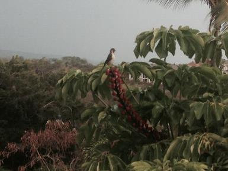
◇サーストン・ラバ・チューブの前にて。著者近影
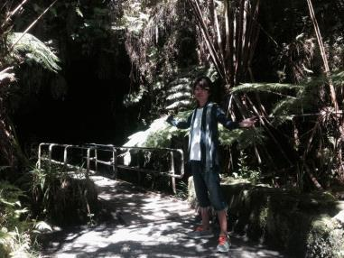
（２）日本でお勧めのパワースポット
日本にも、穴場のパワースポットがあります。
遠くのパワースポットへ行く前に、まずおさえておきたいのは、住んでいる土地の氏神様です。
引っ越ししたら、ご挨拶に訪れておきたいものです。
氏神様は自分の住んでいる場所の神様なので、私は定期的に感謝を伝えにいくようにしています。
現在、私の住まいの近くには、東伏見稲荷神社があります。京都の伏見稲荷大社の東側に位置する東伏見稲荷は、コンコン様で有名です。
コンコン様、お狐さまは、定期的に行かないと効力が出ないと言われるので、私は定期的にご挨拶に行っています。
東伏見稲荷神社の本殿の裏には稲荷祠がたくさんあって、無数の連続鳥居が待ち受けています。
赤い鳥居が色鮮やかに立ち並ぶ姿を見るのが大好きです。また、各祠には１つひとつ神様の名前が書いてありますので、それを読むのも楽しくてワクワクします。
そこで、私は、あることに気づいてしまいました。
稲荷祠には小さなお狐さまが左右にずらっと並んでいるのですが、全部こちらを見るように並べられているんですね。
真ん中には丸い鏡が置かれているのですが、これって自分の中に神様がいることに気づかせるためかもしれないですよね。
誰もが自分の中に神様を見出すことができる。
それを大勢の狐が見守っている。
これが稲荷のもつパワーなのではないか。
他人や神様、宇宙から「見られている」ことを意識できれば、人に対する行いも違ってきますよね？ という教えだと理解するようになったのです。
コンコン様が商売繁盛の神様であることを考えたら、ピーター・ドラッカーが教える「integrity（誠実さ、真摯さ）」の意味がよくわかります。マネージャー（経営者・リーダー）にとって最も重要な資質のことです。
つまり、人が見ていてもいなくても、誰に対しても誠実であることが大切なのだということです。
お参りを通じて、大いなるものから守られているのを感じます。
◇東伏見稲荷神社の連続鳥居
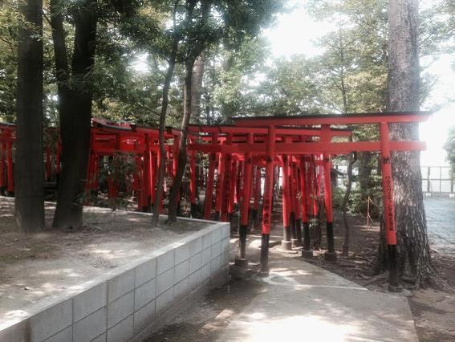
ここで、私が屋外セッションで、クライアントに添乗員のように解説しながら訪れるパワースポットの中から、ベスト３をご紹介します。
１）神田明神
神田明神も東伏見稲荷神社と同じように、本殿の裏が面白いんです。ここにもコンコン様がいます。境内の本殿にしかご挨拶しないのはもったいない。
裏をぐるっとまわったところにある石柱は、石なのに触ると柔らかく感じます。この柱を触っていると浄化されるためか、肩こりや腰痛が軽くなるようで、いつも不思議に思います。
神田明神には可愛いポニーがいます。神馬・神幸号「明（あかり）ちゃん」といい、そのキュートな姿が大好きです。
本殿のすぐ横には、神田の家（井政 -IMASA-）という平日営業のカフェがあり、ここでお茶を飲むのも気持ちがよくてオススメです。
◇可愛いポニーの神馬あかりちゃんです

２）六義園
六義園は四季折々の新緑が楽しめ、波動の高さを感じるパワースポットです。ぜひ大きな木を見て、優しく触れてみてください。きっと何かを感じるはずです。
六義園には素敵な池があるのですが、まるで鏡のように周囲を映し出す水面が見える場所があります。波動が高くないと、こういう現象にはならないらしいです。奥の方に進んでいくとわかると思いますので、ぜひ見つけてみてください。
毎年、桜の季節になると、テレビのニュースで六義園の枝垂れ桜が取り上げられますので、メディアを通じてご覧になったことがあるかもしれませんね。
坂本龍馬を福山雅治さんが演じた大河ドラマ「龍馬伝」。
そこに出てきた香川照之さん演じる三菱財閥の創業者・岩崎弥太郎さんが、東京都に寄贈したのが六義園です。
岩崎弥太郎さんは、なぜこの場所に六義園をお作りになったのでしょうか。
◇六義園には可愛い鴨さんもいます。カモん！
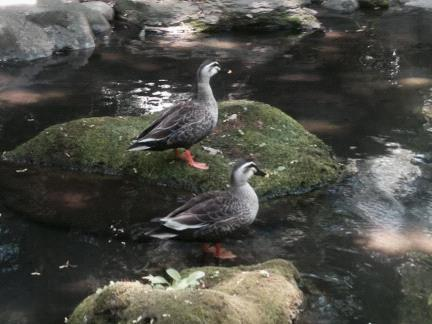
３）旧岩崎邸庭園
岩崎弥太郎さん繋がりで、旧岩崎邸庭園もオススメです。
岩崎邸もなぜそこに建てたのか？ 他では見れないような木がいっぱいあって、日本の美しさと自然のパワーを感じる場所です。
どうして、その場所に作ったのか？
この問いに対する答えは、土地のエネルギーが高く波動の高い場所が与えるパワーを、岩崎氏は知っていたからではないかと、私は勝手に推測しています。
旧岩崎邸は窓から隆々しい木々が見えます。特に２階の窓から見るとよくわかります。窓のすぐ近くに、とても大きな木が配置されているんです。これが何を意味してるのかと想像すると、自然のエネルギーがよくわかります。
あれだけ大きな財閥を築くことができたのは、もしかしたらパワースポットの活用法を知っていたからなのでは？ 自然の力をお借りすることによって得られるものを、岩崎氏は理解していたからではないかと。
もちろん、日本の将来に対する思いや龍馬のお友達だったことも含めて色々ありますが。
今の時代でいうパワースポットが持つ力をよく理解していたから。土地の持つ大いなるパワーに気づいていたからではないでしょうか。
岩崎氏に特殊なスピリチュアルな能力があったと想像するよりも、はるかにわかりやい理解の仕方だと思うんです。
日本の良さを世界に伝えたい。その純粋なまでの溢れる思いがあったからこそです。
多くの人から支持され、たくさんの応援や協力を得るためには、人間性、度量などを身につける必要があります。
そのためにも、岩崎氏はパワースポット＝自然の法則を活用してきたのではないかと思うんですね。
◇旧岩崎邸庭園の入り口はこんな感じです
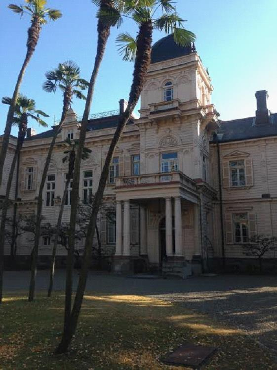
４）お得情報
ここでは、都立庭園の中から六義園と旧岩崎邸庭園を厳選してお伝えしましたが、どちらもお得な年間パスポートがあるのをご存じでしょうか。
六義園の場合、入園料は１回３００円です。その４か月分の１，２００円で年間パスポートが購入できます。
旧岩崎邸庭園の場合、入園料は１回４００円です。その４か月分の１，６００円で年間パスポートを購入できます。
ですが、それよりもっとお得な年間パスポートがあるんです。
六義園、旧岩崎邸庭園に加えて、浜離宮恩賜庭園、旧芝離宮恩賜庭園、小石川後楽園、向島百花園、清澄庭園、旧古河庭園、殿ヶ谷戸庭園の計９箇所。
都立９庭園共通パスポートがあるんです。一般４，０００円。６５歳以上は２，０００円です。
何度も行くなら、どう考えてもこちらの方がお得でしょう。
ちなみに、二〇一四年二月に箱根へ行ってきたのですが、旧岩崎別邸があり、そこに、知足のつくばいがありました。
前作『スピリチュアル美肌革命』の中でご紹介した「知足のつくばい」があったのも、うれしい偶然と受け取っています。
こういうパワースポットへ行くと、まるで風呂あがりのような気分になり、体が軽くなって眠くなるという（笑）。とても面白い効果があるんですね。
自然の法則を活用してきたという意味では、私は空海が大好きです。
空海って、「なにか食うかい？」ってギャグを飛ばしたくなりますが（笑）
空海は、小さな頃から特殊な能力があったようです。ちっちゃい頃は「まおちゃん」というスケート選手のような名前だったらしいです。
まおちゃん時代に、彼は崖からダイブしたそうです。もし死んだら、それはそれで納得できると思って飛んだそうです。しかし、天女のようなものがやってきて守られたそうで、ふわっと着地して事なきを得たそうです。
他にも空海のエピソードはいっぱいあります。天才ウルトラ超能力少年が大人になって密教を作った。私はこのような捉え方をしています。
空海繋がりという点では、ふとしたきっかけで日本最年少の阿闍梨様と友達になりました。陰陽師でもあられる方です。愛くるしいキャラクターで本当に優しく温かく、ＳＫＹ プロデュース全員で仲良くさせていただき感謝しています。
本当に不思議に思いますが、人とのご縁という繋がりが花開いていくようです。１つずつの出来事は点と点に過ぎませんが、後から線となってすべてが繋がっていたことに気づくと驚きます。
弘法大師・空海が座右の銘にしていた言葉が私は好きです。
「人の短を言うことなかれ 己の長を説くことなかれ」。
この言葉が身に沁みて理解できるようになったことを、うれしく感じています。
◇箱根の旧岩崎別邸の知足のつくばい。口の中に小銭が入っています
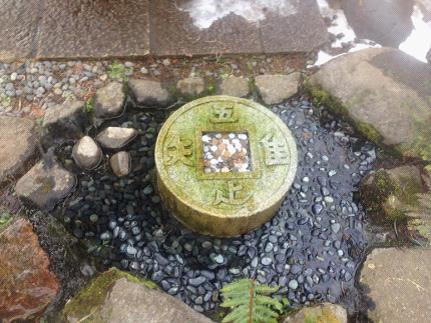
◇お友達の阿闍梨様から送っていただいた祈祷札。玄関に貼っています
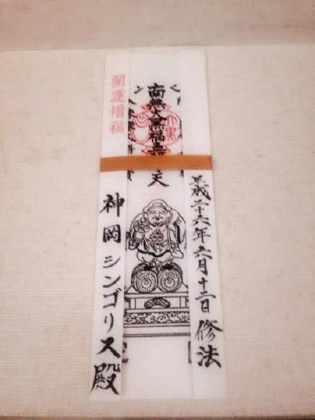
（３）グラウンディングで心身を整える
グラウンディングとは、土地に根ざした波動と自分の波動とを調和させることです。
エネルギーに満ち溢れたパワースポットでグラウンディングをすると、その効果を強く実感できます。
地球に根を張る宇宙からのパワーを自分の中につなぎとめると、精神的にも肉体的にもバランスが整っていくのがわかります。
滞っていたものが流れ出すわけですから、体全体の調子が良くなるんです。
ハワイ火山国立公園へ行った時には、太陽と地熱で温められた溶岩の上でグラウンディングを行いました。
溶岩の塊が広がる場所に車を止めて適当な場所まで歩いていき、ここにしようと決めたら、その場にタオルを敷いて横たわります。
グラウンディングのやり方は簡単です。
ゆっくり息を吐きながら、不要なものを浄化するイメージを作ります。
次に、エネルギーを取り入れていくことをイメージします。
その時に湧いてくるものが「安心と感謝」であれば、グラウンディングは成功していると言えるでしょう。
もちろん、グラウンディングは、ハワイに行かないとできないことではありません。
先ほどの神田明神で、石柱に触れるのもそう。六義園や岩崎邸の触れてもいい木に、手のひらをつけてみるのも同じ効果があります。
自然の力をお借りするのですから、敬意を払い、ありがたく感謝しながらやってみるんですね。
すると、いつの間にか、笑顔でニコニコしている自分に気づくことでしょう。
グラウンディングの効用とは、エネルギーをいい状態に整えることができることなんですね。だから快適になって、風呂あがりのようなサッパリとした状態になれるわけです。
「ありがたいね」と思えたら、さらに感謝が循環していくのがわかります。
◇キラウエア火山で岩盤浴（？）著者近影
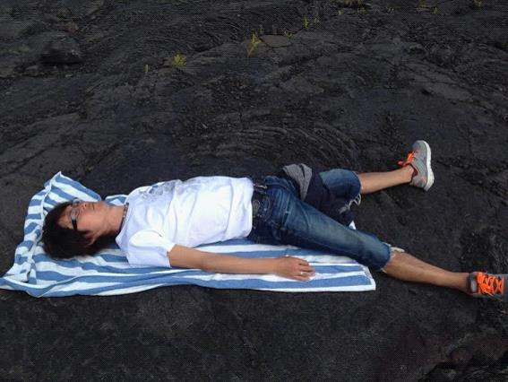
（４）エネルギーは浄化とチャージ
グラウンディングのやり方について、もう少し詳しく解説します。
グラウンディングは、自分の中のエネルギーを循環させて整えているわけですが、「先に出すから、後から入ってくる」、この順番が大きなポイントです。
面白いもので、「出入口」という言葉はありますが、「入出口」という言葉はありません。
出入口という通り、いつも出すのが先です。入ってくるのは後からでいいと覚悟すると、好循環スパイラルに近づきます。
これは、すべてにおいて当てはまる自然の法則と言えるものです。
宇宙の法則である「投げかけたものが返ってくる」というのは、まさにこのことを意味します。投げかける＝先に出す、だから返ってくる＝入ってくるになるからです。
私たちが生まれてきた時だって、そうだったんです。
お母さんのお腹の中から出てきた時は、口に含んでいた羊水を吐き出したからこそ、「オギャー！」と産声を上げることができました。
もう少し正確に言えば、口から羊水を出したから息を吸うことができて、それから大きな声を出すことができたわけです。
エネルギーは、出すだけでは成立しません。入れるだけでも成立しないのです。出して入れること、循環させてこそ成立するものなのです。
自分のエゴ（我欲）でご利益だけを欲しがっても入ってこないのは、エネルギーに例えるとよくわかるのではないでしょうか。
不要なものを手放すのは浄化で、エネルギーを取り入れるのはチャージです。
何かを手放すことができたからこそ、新たに入ってくるものと出会えるんです。
上手にエネルギーを循環させて整えるためにも、「フォー・ユー」という方向でエネルギーを使っていくと、浄化もチャージもうまくいくようです。
「フォー・ミー」だと内だけで不完全燃焼となってしまいます。
（５）宇宙は調和の方向で進んでいる
先に、グラウンディングとは「土地に根ざした波動と自分の波動とを調和させること」とお伝えしたことの補足です。
人生に迷いが生じたとき、意識をどのように持っていけばいいのかということの、ひとつの指標となる質問です。
「それって、宇宙から応援される方向かしら？」
たとえば、お金持ちになりたい、彼氏・彼女が欲しい。
だからといって、パワースポットへ行って一生懸命お祈りしても、叶えられないんじゃないかということなんです。
宇宙は調和の方向で進んでいるので、自分の願いを叶えてくれるというものではないのです。
自分のためではなく、大切な人のためにできることをする。
つまり、「フォー・ミー」ではなく「フォー・ユー」で生きることです。
「フォー・ユー」で生きるとは、誰かの役に立つように、誰かに喜ばれるように生きていくこと。
そうすれば、宇宙からの応援や協力が入ってくるのです。
パワースポットというと神社を思い浮かべるかもしれませんが、六義園や旧岩崎邸庭園、ハワイもまたパワースポットです。
もし、これらの場所を知っていてもまだ行ったことがないのでしたら、ぜひ行ってみることをオススメします。
実際に良い気の流れを感じると、宇宙エネルギーが調和の方向で進んでいることが体感できることでしょう。
「フォー・ユー」の方向にエネルギーを流していくと、浄化もチャージもうまく感じることができます。
「自分が自分が」、「自分さえよければそれでいいんだ」、「自分の夢を叶えるために頑張るんだ」と、そういう方向ではないやり方があるんです。
未来の子どもたちに残すものを、少しでも意識して立ち止まって考える時間を持ってみること。
すると、その時間は「フォー・ユー」が繋ぐ教養となり、宝物となっていきます。
◇ハワイのヘイアウでチャージ中
ヘイアウとは日本の神社のようなところ。その土地に流れるエネルギーを集めて、魂のこもる石を積み上げて作られた場所です。古代ハワイアンは神聖な波動が溢れる場所にヘイアウを作りました
。
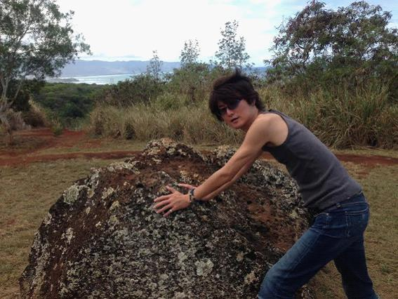
第３章 自分の部屋をパワースポットにしてしまえ
パワースポットと呼ばれる、土地の波動が高い場所へ行くのも効果がありますが、最も良いのは、自分の住んでいる場所をパワースポットにしてしまうことです。
といっても、現在、住んでいるところの方位が良くなかったり、土地の波動が高くなかったりしても、すぐに引っ越すことはできませんよね。
だったら、どうする？ という発想です。
発想を変えて、あなたがいつもいる場所を、パワースポットに変えてしまえばいいんです。
自分の部屋をパワースポットに変えることができたなら、どんなに素敵な毎日になるでしょうか。
具体的にどうするか？ その方法を、今からお伝えしていきます。
（１）玄関周りを整える
玄関は人が出たり入ったりする起点となる場所ですから、常にきれいにしておく必要があります。
玄関の目に見えるところをきれいにしている人は多いですが、見えないところをきれいにする人は意外に少ないんですね。理由は、面倒くさいからです。私も同じく、面倒くさがり屋です（笑）
住んでいる場所の出入口となる玄関は、外の世界と中の世界を結ぶ聖なる場所です。ある意味、外と内とを結ぶ境界線となる場所といえます。
ゆえに、結界といってもいい。ここをきれいに整えるんです。
外から帰ってくると、いろんなものを持ち帰るわけです。チリやほこりなど目に見えるものだけでなく、目に見えないもの、くっ憑いてくるものだってあるかもしれないわけです。
それを落とすには、盛り塩が有効です。効果は、浄化です。
私の場合、玄関ドア下の両端２箇所に盛り塩を置いています。
塩は安いもので構いません。私は、スーパーで売っている粗塩を使っています。お醤油入れくらいの小皿に、日本酒のおちょこみたいなものを使って塩を型押ししてポンと乗せるんです。それを玄関に置いておくわけです。
取り替える時期は、塩の状態で判断します。
水分を含んだかのようにドロっとしていたり、カチカチに固まってきたら、新しいものに取り替えます。
取り替える際は、塩だからといって、そのまま流しや洗面台に流さないでくださいね。２つともビニール袋の中に入れて燃えるゴミとして捨てるようにしましょう。
ドロっとしたり固まったりする理由を考えれば、そのまま流すことはできませんよね。
次は、下駄箱の掃除です。
波動アップの専門家として、私は最低でも１か月に１回は下駄箱を掃除するようにしています。
下駄箱を、もったいない状態にしている人がけっこういます。
今ここで、あなたの家の下駄箱の中を見に行ってきてください。
私が「もったいない」と言う理由がわかると思いますよ。
わかりましたか？ ゴミやいらない物が意外に溜まっているでしょう（笑）
下駄箱を掃除すると、一緒に靴まで整理したくなります。
季節に合わせて、靴も衣替えをしてみると面白いですよ。冬用のブーツなど、使わない時はしまっておくようにしています。
また、普段からも靴は出しっぱなしにせず、できれば玄関には靴がない状態にまでもっていってください。外から帰ってきた時の爽快感が断然違ってくるからです。気持ちよく帰宅できると、部屋の中でのリラックス度が高まります。
ドアを開けて広がる最初の光景、そこがきれいだとどうなるか。
玄関が靴だらけだった時とは違って実感できます。自分の部屋に対する快適さが、自然と脳にインストールされていくんですね。
雨の日に履いていた靴は、帰宅して下駄箱にしまう前に必ず雑巾で雨水を拭いてからしまうようにしています。そうすることで、靴の寿命が伸びるだけでなく、次に履く時に快適になるからです。
靴を拭くための雑巾は、下駄箱の近くに用意しておいてくださいね。近くにないと、どうしても面倒になってしまいますから。習慣化してしまえば、小さなお子さんでも楽しくキュッキュッと拭くようになります。
たかが玄関、されど玄関です。こんなふうに玄関周りを整えていくと、部屋の入口をきれいに整理しただけなのに、まるでホテルにいるかのような快適さを味わうことができます。
快適さが、自然と脳にインストールされていくのです。
同じことが、お財布にもいえます。お財布はお金の玄関兼部屋だからです。
靴の向きをそろえるように、お札も向きをそろえて入れますよね。レシート等は別にして、スッキリ整理するほど気持ちよく使えます。
出たり入ったりする起点となる場所をきれいに整えることの大切さは、お金においても同じなのです。
（２）トイレ掃除でエゴ（自我）を流す
トイレ掃除をして、お金が入ってきた人の体験談を聞いたことがありますか？ 本人から直接です。私は、あります。その本人が、私だからです（笑）
実際に入ってきた金額はここでは伏せますが、話を聞いた皆さんは驚いて、「どうやったの？」と知りたがります。
ちなみに、トイレ掃除をした後は、便器の蓋を閉めるのを忘れないでくださいね。蓋を閉めないと、あまり効果が出ません。いたした後は忘れずに。
トイレ掃除をすると、なぜお金が入ってくるのか？
その理由が、私なりにわかってきたので、お話しますね。
トイレ掃除をする時は、手のひらを使いますよね。「トイレクイックル」のようなお掃除シートを使う場合でも、必ず手のひらを使って拭いているはずです。
するとわかるのが、トイレには、尖っていたり鋭かったり、角ばったフォルムが一切ないということです。
角ばったところがないので、拭いていると優しい気持ちになってくるんですね。
まるで赤ちゃんを抱いている時と同じような気持ちといいますか。赤ちゃんの体は柔らかくて、フォルムが丸っこくて。だから可愛い！ と感じるんです。手で優しく包みたくなります。この感覚に近いんじゃないかと思うんですね。
さて、トイレ掃除は、誰のためにするのでしょうか？
自分のためであり、部屋に来た友達や彼氏・彼女のためだったりもしますね。
外出した時にトイレが汚れていたら、トイレットペーパーでちゃちゃっときれに拭いたりしますよね。
いずれにしろ、「次に使う人のため」ですよね。
次に使うのが自分なのか、友達なのか、彼氏・彼女なのか、あるいは知らない人なのかわかりませんが。
トイレ掃除＝「フォー・ユー」ができているということに繋がりませんか。
トイレ掃除は「人のため」というお話です。
トイレの汚れとは？ 汚れ＝考え方の癖や執着と同じで、滞って循環して流れていかないもののことを言います。
こびりついた排泄物と同じだと考えれば、すごく合点するんですね。
汚れをきれいにして、ジャーっと水に流すと、やっぱり気持ちがいいなって。
清々しい気持ちになって、「フォー・ユー」で生きていこう！ となります。
「フォー・ミー」の人と「フォー・ユー」の人。
どちらにお金が入ってくると思いますか？
誰かを喜ばせよう、誰かの役に立ちたいと思っている人だったら、次の人が気持ちよく使えるようにトイレ掃除をする。トイレがきれいになっていたら、誰かが掃除してくれたことに感謝する。汚れていたなら、自分がきれいにすればいい。
これとは逆に、汚れていたら文句や愚痴を言う。自分が使った後も汚したままで平気でいる。トイレがきれいになっていても、誰かがやってくれて当たり前と思う。汚れていたなら、自分からは進んで掃除したくない。
とちらが、お金や人から愛されるでしょうか。
汚れとは、エゴ（自我）の塊みたいなものです。
滞って循環して流れていかないものを、きれいに流していけばいいんです。
トイレ掃除でエゴ（自我）を流すと、いろんな良いものが入ってくる理由がわかります。
出すから、入ってくるんです。
手放すから、やってくるようになる。
トイレ掃除は、やり続けていると、どんどん人柄が丸くなっていきます。
手のひらから、伝わってくるものがあるからです。
「フォー・ユー」で生きる意味もわかります。
トイレ掃除をして、手のひらを使って感覚的に身につけていくんです。
トイレ掃除も、自分の部屋をパワースポットにする基本です。
ぜひやってみてください。
やると快適になって、気持ちがいいですよ！
（３）手のひらは波動をキャッチするセンサー
子どもの頃を思い出してみてください。何かを感じようとする時、どのようにしてきたでしょうか。
そう、子どもの頃から、手で触ってきたと思うんです。
触ることによって、これはコップ、これはスプーン、これはパパ、これはママと。それが何なのか、触れることで認識してきたんです。
触るという行為自体が、エネルギーの浄化やチャージ、グラウンディングとも深く関係しています。
だからと言って、何でもかんでも触ればいいという話ではありません。無闇に触ってはいけないものもあるからです。
神社の木がわかりやすいと思うのですが、触れてはいけない御神木というものがあるのも事実なんですね。
人間だって、見知らぬ人が近寄ってきて興味本位でベタベタ触られたら嫌ですよね。仮に知っている人でも、触られたくない場合もあるわけです。そもそも、異性を無闇に触ったらセクハラになってしまいます（笑）
神社へ行ったら、木をよく見てください。どの木があったから、そこに神社が建てられたのか。こういう視点で見てみると面白いですよ。宝探しのようなゲーム感覚で、「なるほど、これだったのか！」ってわかります。
恋愛成就で有名な某神社へ行った時のエピソードです。
入った瞬間に、ここは波動が弱まっているかもしれないと感じました。
神社を出る時に、その理由がわかりました。
大きな木があったのですが、枯れて補修剤が大きく塗られているのが目に飛び込んできたからです。
自然に生えている木をよく見るとわかります。エネルギーを吸い取られたかのように枯れている木もあれば、隆々しくエネルギーに満ち溢れている木もある。この差は一体どこから来るんだろうと。
ちなみに、しめ縄がかけてある木や、周りを柵などで囲ってある木は触らないようにしてください。
神社の木は、よく見てエネルギーを感じてみてください。
手のひらは波動をキャッチするセンサーというのは、有名な片づけ本に書いてあるのと同じようなことです。
『人生がときめく片づけの魔法』（近藤麻理恵著・サンマーク出版）には、手で触れてみてときめくかどうか、その感覚で残すか捨てるか決めなさいと書かれています。
単に目で見て選ぶのではなくて、手で触ってみてしっくりくるかどうかを感じるのです。
頭で考えるよりも、直感でフィットするかどうかが大切です。
手のひらで触ってみて、直感で感じてみる。
目に見えない波動だからこそ、無意識で感じる気持ちを素直に受け取ることが大切なのです。
たとえば、私がパワーストーンを選ぶ時は、手のひらセンサーを使います。素直に感じながら、手の中でストーンが動くかどうか。その動き方で決めているんですね。
パワーストーンを右手のひらに乗せて、その上に左手をかざすと、元気よくぷにぷに動いたり、ぐぐっと動いたりするんです。まったく動かない石は選びません。
石が手のひらで動くのをはじめて知ったのは、カウアイ島で買ったフローライトでした。
水に弱い石だということを当時は知らなかったので、浄化しようと塩水で洗ったら動かなくなってしまったんです。
パワーストーンって自分の成長に合わせて、合う石の種類が変わってくるようですね。
現在は、新たなステージのストーンをつけています。
動かなくなってしまったフローライトは、元あった場所のハワイへ戻しました。
ちなみに、現在は、ホノルルのワードセンターにあるセドナというお店がお気に入りです。ここはお店自体がパワースポットのようなところで、親切なスタッフの方が、石の意味が日本語で書いてある紙を渡してくれます。
手のひらを通じて伝わってくるものがあります。言葉を使わない交流が楽しい出会いをもたらしてくれます。
優しく触れて、波動をキャッチしてみてください。
◇このように柵などで囲ってある場合、中に入らず木にも触りません
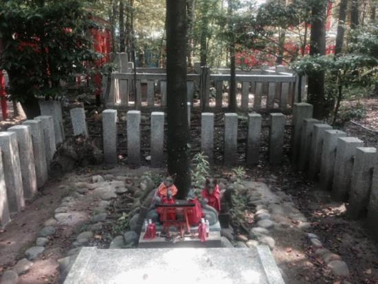
◇ワードセンターにあるセドナの前で。著者近影
（４）部屋を快適空間にすると開運していく
自宅が快適でなかったら、帰りたくなくなりますよね。
毎日、自分が寝たり、起きたり、食べたり、リラックスする空間なのですから。
快適さって、必要な物があるかどうかだけではなくて、どれだけ心地よい雰囲気で過ごせるかどうかで決まると思いませんか。
私の場合、部屋をハワイにしています（笑）
部屋にいる時は、音楽は、「ハワイアンレインボー」をかけっぱなしにしています。
テレビはほとんど見ないので、音楽でハワイを楽しんでいるんです。
ハワイアンを聞いていると、柔らかなハワイの空間を無意識で思い出せるからです。潜在意識を使って戻れるんですよね。あの時にタイムトリップできるといいますか。
香りも、快適に過ごすために有効です。好きな香りに包まれて、清涼感ある空間にいると、本当に大切なものが何かということを忘れないでいられます。
大事なことは、どういう空間が自分にとって快適なのかを知っておくことです。自分にとっての快適さに気づく必要があるんですね。
だからこそ、体験がものをいうわけです。実際にハワイへ行ってみたり、日本でもパワースポットへ行ってみたり。
私は自分の部屋を波動の高い空間にするために、波動の高い場所へ行き、その時に感じたことをいろいろ取り入れています。
ハワイなのに、香りは韓国仕様だったりしますが（笑）
遊び心で楽しんでいます。
自分の部屋を心地よさで満たしていくことで、面白いほど開運していきます。
リラックスできるスペースにいると安心と感謝に包まれるからです。
普段、身につけるものだって同じです。自分の体だって自分の部屋の一部なのですから。
余談ですが、家具のなかで最も気を使って選んだ物はベッドとイスです。
快適な睡眠をとれるベッドは健康のために必須ですし、長時間座ってパソコンに向かっても腰を痛めない椅子も必須です。
（５）引っ越しをすると運気が上がる場合
引っ越しをすると運気が上がる、これはまさに私のことです。
引っ越す前と後で、これほどまでに運気が変わるとは思ってもいませんでした。
住んでいる場所が、大きく関係しているなと実感しています。
引っ越す際、土地の波動が高いところへ住むとわかっていたので、部屋をピッカピカのハワイ仕様に仕上げていきました。
そうしたら、どんどん運気が上がって、好循環スパイラルが始まったのです。
運気が上がったのがなぜわかるのかというと、人に恵まれたり、感謝することがどんどん増えてきたからです。
ですから、もしいま住んでいる場所で停滞していると感じるなら、思いきって引っ越しすることをオススメします。
自分の人生の第１章、第２章、第３章......と。新たなステージに上って行きたいと考えるのなら、章の切り替わるタイミングで、住んでいる場所を変えることも必要になるかもしれません。
人間は変化を恐れるものですが、環境に慣れるのも意外に早いものです。やってみたら簡単だったということに、後になってから気づくのです。
そのためにも、波動の高さを感じられるようになっていきましょうね。
（６）地主の子どもたちが親から教わること
土地の波動が高い場所へ住むと運気が上がると言いますが、どうやら本当のようです。
土地に関することですから、そのことをよく知っているのは、地主だったり不動産会社の経営者だったりします。
たとえば、土地に関することでいえば、重要事項説明書には書けないような情報もあったりします。もちろんここにも書けません（笑）
地主に限らず、資産家や富裕層のお子さんが、親から教わることがあるみたいです。ある一定層の子どもたちに、代々受け継がれてきた情報です。
その中から、こっそり１つだけお伝えします。
たとえば、運気が下がっているなとか、邪気を浴びてしまったなという時は、近くの神社にある大きな木に両手で触ってきなさいと言われるそうです。
その時のポイントは、木に向かって声をかけることです。
「悪い気を吸い取ってください、良い気を流してください。」
これは、グラウンディングみたいなものですね。
土地を大切に扱っていく仕事だからこそ、代々受け継がれてきたものを、さらに子どもたちへ受け継いでいくのでしょう。
この話を聞いてから、私も触る時は声に出して言っています。
「悪い気を吸い取ってください、良い気を流してください。」
優しく両手で木に触れながら、小さな声でつぶやきます。
ちなみに、面白い話ですが、不動産会社の社長さんの中には霊感がある方もいて、部屋の中に入ると、どこに何がいるかわかるそうです。
私の知り合いの社長さんは、そんな時は、霊に向かって恫喝するそうです（笑）。
「コラ！ 早くここから出ていかんかい！ ボケ！ カス！ アホ！」
この話を笑って話す社長さん。本当に面白いのです。
いつもお世話になって感謝です。
◇ハワイのカイルア・コナでつぶやく著者近影
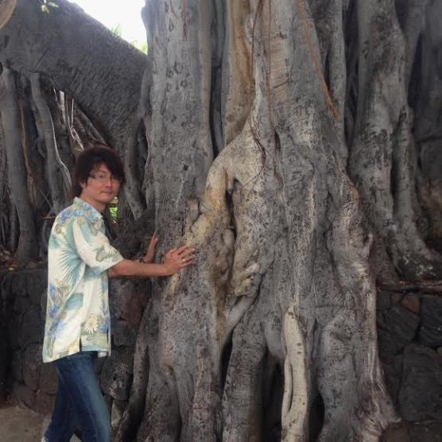
第４章 「フォー・ユー」で気づくパワースポット
（１）自分のために願っても叶わない
「あなたにとって、パワースポットって誰ですか？」を言い換えるならば。
あなたにとって本気で「フォー・ユー」できる人と出会いたいですよね？
それは誰ですか？ ということです。
二〇一四年の新年参拝ツアーで、１つの実験をしました。
「フォー・ユー」を使った願い方をすると、実際にどうなるかを体験してもらったんです。
集まった皆さんに対して、私から参拝前にこのようにお話しました。
「今日は自分のためには、一切願わないでください。今日参加している他のメンバーでもいいですし、自分にとって大切な人、クライアント、取引業者の方々などでもいいです。日頃の感謝を思いながら、その人たちが幸せになるように祈ってください。」
そうしたら、どうなったと思いますか？
早い人だと、１週間で夢が叶ってしまったんです。
結局、宇宙の法則で「投げかけたものが返ってくる」のです。
自分のために願っても叶わないのだとしたら、他人のために本気で願ってみたらどうかということです。
そうすると、なぜかわかりませんが、結果的に自分のことも叶っていくようです。
相手のためを願うと、自分に返ってくるものがあるようですね。
「強く願えば叶う」と教える自己啓発のセミナーがありますが、私の大好きな小林正観さんは、このようなセミナーには招かれても行かなかったそうです。
なぜなら、宇宙構造は、そういうふうにはできていないからだと。
新春参拝ツアーは、皆さん喜んでいただいたようで、私もうれしく楽しいひと時を過ごしました。
「なるほど！」と納得できる瞬間と立ち会うことができたのですから。
自分のためでなく、大切な人のために願ってみませんか。
（２）敵は作るな！ 周りを見渡せ
「フォー・ユー」を投げかけるほど、素敵な出来事がやってきます。
それとは逆に、「フォー・ミー」を投げかけていると、世界はどんどん狭くなります。
些細な一言で人間関係を壊してしまったり、相手の嫌がることをやり続けていれば、いずれ忘れた頃に自分に返ってきます。
仮に意見の食い違いがあっとしても、笑って流せればみっけものです。
無闇に敵を作るほど、損なことはないのです。
波動アップ的に言うと、流れに身を任せて導かれていけば、戦って勝つ必要がなくなります。そもそも競争する必要がないのだから、敵という概念がなくなるわけです。
自分ばかり見ていたら、相手のことが見えなくなります。相手のことが見えなくなるから、いつしか敵として捉えるようになるんです。
周りを見渡してみると、本当は敵じゃないことがわかるかもしれません。よく周りを見てみたなら、仲良くなれるかもしれないのです。
あなたの周りには、どんな人がいますか？
波動アップの流れを体験すると、さまざまな形で応援と協力を得ることができます。
そして、その中から、パワースポットとなる人物と出逢います。
これがパートナーという存在です。
面白いもので、パートナーと出逢うためには、必要となるキャストがいます。繋ぎの役割を担う人です。あくまできっかけに過ぎないのですが、その人がいない限りパートナーとは出逢えないのですから、その人がどんな人であったとしても、感謝すべき存在です。
もしこの人物が役割を果たす前に、自分から嫌って敵と見なしていたら、全体のストーリーが歪んでしまうと思いませんか。
映画でも、登場人物が敵ばかりだったら、まったく物語が進みませんよね。
自分の人生という物語＝ストーリーを動かすんです。
敵ではなく味方になってもらえたら、出逢いが色づきはじめます。
（３）選ばれるためには何が必要なんだろう？
何かやろうとする時は、自分で選んでいるように見えて、実は選ばれているということをご存じですか。
人の人生は、毎日がオーディションみたいなもの。
人との巡り合いやご縁というものは、すべてそうです。
波動アップすると、自分で選ぶことが少なくなります。なぜなら運に運ばれて導かれていくからです。
ということは、「選ばれるためには何が必要なんだろう？」の答えは、極めてシンプルにはじき出されます。
自分勝手、自分本位、「フォー・ミー」をなるべく捨てて、薄味な自分になるということです。
ちなみに、今は人にスポットライトを当てようとすればするほど、成功していく時代です。
ビジネスで言えば、LINEやfacebookがわかりやすいでしょう。ユーザーに場を提供しているだけなのに、大成功しています。
誰かを応援すればするほど、結果として自分も応援されます。
これらは、日頃の行いの賜物です。
都合のいい時だけ応援してもらいたいと思っても、それは難しい話です。
これまで何をしてきたかによって、応援してもらえるかどうかが決まるのです。
決して個性を殺しなさい、という意味ではありません。
自分よりも周りを引き立たせて、自分は薄味になるということです。
日本人の主食である米は、薄味です。だから、どんなおかずともバッティングしません。薄味だからこそ主食に選んでもらっているわけです。
歌でいえば、オリジナル楽曲通りに歌うのがプロです。少し崩しても全体のイメージを損なわないように、お客さんを喜ばすために歌います。
ドラマでいえば、プロの役者は演じることに徹します。監督に求められる世界を役者として追求することで、お客さんに感動を与えるのです。
自分が薄味になって宇宙の法則通りに投げかけていくと、どこかのタイミングで引き上げてもらう出来事がやってきます。
そのためにも、今のうちから選ばれる自分にしておくんです。
（４）好き嫌いがなくなると、宇宙から応援される
何かを判断する時は、好き嫌いではなく、波動で判断するのがオススメです。
波動で判断して、あなた自身がうれしいと感じる方を選ぶだけでいいのです。
我が強いと、どうしても好き嫌いが多くなります。その結果、味方もできますが、敵も作ることになります。
敵は作らなくていいんです。
宇宙から応援されるとタイミングが合ってくるんですね。
いろんな形で応援と協力がやってきます。
人に限らず、天気に味方されたり、電車やバスが来るタイミングが合ったりといった、すべてにおいてです。
すべてが面白いようにタイミングよくやってくるから不思議です。
宇宙から応援される生き方になると、自分の力だけでやる努力が必要なくなります。
これまで「フォー・ミー」でやってきたことを波動アップして越えていく。
すると、新たに「フォー・ユー」で可能なことに気づいていきます。
努力ではないやり方に気づくと、宇宙から応援されるんです。
ところで、あなたは食べ物の好き嫌いがありますか？
もし好き嫌いがあるなら、この話は面白いかもしれません。なぜなら、食べることで何かを助けることができるという話だからです。
肉、魚、野菜など、私たちは食べることで体内に入れて栄養をとります。
たとえば肉だったら、人に食べられることでヒトの細胞に昇華します。
動物である牛がヒトに生まれ変わるためには、何十万回も転生する必要があるそうです。
ところが、人間に食べてもらうことで、転生の回数をワープできるみたいなんです。
つまり、食べることは動物、この場合は牛の転生を助けることになります。
肉に限らず、魚や野菜でも同じことです。
生まれ変わるのを助ける行為、それが「食べる」という行為だとしたら、こんな風に言えないでしょうか。
好き嫌いがなくなると、他の命の昇華や変換を助けることになる、と。
これもまた、宇宙から応援されることに繋がります。
すると、ますますありがたく食べられるようになるので、食の好循環スパイラルが起こっていきます。
（５）宇宙から降りてきたメッセージをお伝えした話
私と近しい方やクライアントなら思い当たると思いますが、「ちょっと降りてきたので......」と宇宙からのメッセージをお伝えすることがあります。
もちろん、誰かれ構わず言うわけではありません。
また、メッセージによっては辛辣な内容になる場合もあるので、そういう時はオネエな語り口調になってるかもしれません（笑）
威圧的にならないように、気をつけているからです。
これは、ある日のエピソードです。
クライアントが結婚することになり、対面セッションの中でいろいろと話をうかがっていた時のことです。これから婚約指輪を彼と二人で見に行くと聞きましたので、私からある提案をしました。
この時、降りてきたメッセージは「指輪、ハワイ、ストーリー」でした。
二人の大切な思い出として指輪を作るので、指輪にストーリーという体験を刻むことができれば一生ものです。
新婚旅行でハワイへ行くことになれば、オリジナルの結婚指輪がハワイアンジュエリーで作れます。
私が、そのように提案したところ、スルスルと物事が進んでいってハワイ行きが決まりました。
婚約指輪に使う予定だったお金を、もう少し貯めて、新婚旅行と結婚指輪にする計画が進んでいったのです。
そのクライアントは、セッション後に銀座の有名店へ婚約指輪を見に行く予定でした。ですが、普通に指輪を買ったなら、それは単なる物のままです。
しかし、そこに二人の思いを込められたなら、その指輪は単なる物ではなく、一生ものの思い出になるのです。
そのクライアントが好循環スパイラルに入っていった状況を時系列で振り返ると、こうなります。
たまたまある人から紹介されて、私のセッションを受けるようになった彼女。セッションで波動アップの世界を知り、課題をこなしながら進んでいきました。
すると、たまたま今の彼と出逢うことになったのです。
その出逢いが結婚に至るとは知らずに、彼女は、大切なご縁をいただいたことにただ感謝しました。
安心と感謝で、好循環スパイラルを作るのを続けていったのです。
「フォー・ユー」を投げかけていくと、仕事も恋愛も好転していきました。
ある日のセッションで、彼女は私に結婚することを報告しました。
そのとき、たまたま降りてきたメッセージを彼女に伝えたところ、彼と相談し、本当にハワイへ行くことになったのです。
銀座の有名店で婚約指輪を買う予定が、まさかのハワイ行きと、思い出の詰まったオリジナルのハワイアンジュエリーに変わってしまったのでした。
これらは、すべてノンフィクションです。
不思議に思うかもしれませんが、波動アップする過程で時空が切り替わっていきます。
偶然の「たまたま」が続いていく中で、パズルがカチッとはまっていくように、波動の高さがあらゆる面へ共鳴していくんです。
宇宙からのメッセージを取り次いだこの日は、面白い日でした。
セッションにお申し込みいただいたばかりの方から、ＵＦＯを見たとご連絡があったんです。空に鍋が浮かんでいたそうです。光る鍋がすぅーっと飛んでいったのを見たらしいです（笑）
このように、うれしい報告を続々といただいています。
人それぞれ違いはありますが、私はサポート役に徹して、本人の力を引き出します。だからこそ腑に落ちて納得できるんです。
クライアントの満足度が高いのは、本人の力で波動アップできることを実感できるからです。
場合によっては、複雑に絡み合っていた糸の背景が、何が、どのように、どういった経緯で起こったのか、私の方から説明させていただくこともあります。
その上で、波動アップを目指していただいています。
心理カウンセラーであると共に、心のパートナーでありたい。このように思いながら日々活動させていただいてます。
◇私がハワイアンジュエリーを作ったお店「Jurri Jurri」
第５章 波動アップすればパワースポットがやってくる
いよいよ最終章となりました。楽しんでいただいてますか。
私は波動の専門家ではなく、波動アップの専門家です。
波動アップするとどうなるか。その具体的な効果についてセッションを通じて体験してもらっています。
たとえば、トイレ掃除をするとお金が入ってくるようになる、という現象があります。
なぜそうなるのかは、わかりません。なぜと問いかける前に掃除し始めているからです。
どうしても理由がわからなければやらない、というのならそれもよしです。
私は、ある時から、「なぜ？」と問いかけることをやめました。
「どうしてそうなるのか？」という理由を知る前に、目の前に現実的な結果が現れてくるようになったからです。
やってみたらありがたい出来事が起こるようになり、ひたすら感謝しながら実践し続けるようになったのです。
波動アップは、実践してこそ効果が現れるものです。
ちょっと横道にそれますが、小さい頃、親から「なぜこの子は片付けができないんだろう」と言われたことがありませんか。私はしょっちゅうでした（笑）
これって親の立場からすれば、片付けないことが気に入らないのです。
なぜ親の都合通りにいかなんだろうと子どもに問いかけながら、片付けないことを責めているんですね。なぜ＝どうしてが否定的に考える癖がついてしまうと、なかなかそこから抜け出せなくなります。
もちろん、今では部屋をハワイ仕様にするまでに至りましたので、片付け、掃除、整理などは基本中の基本。当たり前にできるようになりましたが。
「なぜできないの？」と問いかけたくなる時は、「どうしたらできるか？」で考えていきたいものです。
波動アップしようと決めた瞬間から何かが変わるのは、「決める」ことでスイッチが入るからです。
決めたことをやり続けると、途中から応援と協力がやってきて、パワースポットとなる存在と出会います。
（１）宇宙に好かれるとタイミングが合ってくる
どれだけタイミングを強引に合わせようとしても、偶然やってくることは自分の意志で操作できるものではありません。
たとえば、ハワイで見るレインボーはまさにそうです。雨が降ったからといって必ず見られるわけではなく、たまたま空を見上げたら出ていたなんてことがよくあります。
ダブルレインボーと呼ばれる二重の虹を見ることもごく稀にあります。私も数回しか見たことがありませんが、ラッキーな気分で満たされます。
こういう時は、「宇宙から好かれている！」と実感します。
そんな時はすぐに、「ありがとうございます！」と言葉に出して伝えます。宇宙も言葉を聞いているのを、体験上、知っているからです。
宇宙に好かれるというのは、人でも同じことです。
人に好かれるようになり、自分からは誰かを嫌わない。そうなると宇宙からも好かれるようです。
誰かを嫌わず、愚痴、不平、不満、悪口、文句、泣き言などを極力言わないこと。
「悪口なんか言わないよ」という人でも、天気の悪口を無意識で言っていることがありませんか？ 「今日は天気が悪い」なんて言いますが、天気は悪いことをしているのではないですよね。
大切なこと。
それは、宇宙という漠然とした広いものに対して憧れる前に、まずは目の前にいる人と仲良くなること。
対立ばかりしていたら、宇宙が味方になって応援してくれるかしら。
人から好かれるようになると、宇宙から味方されます。宇宙から味方されるとラッキーなことが増えていきます。ラッキーが増えていくと感謝できることも増えていきます。感謝の量が圧倒的に増えていくのですから、タイミングが合っていく。
たまたま、偶然、シンクロニシティなどは、感謝するほど増えていきます。ありがたいことの中で、タイミングは合っていくものだからです。
素敵なタイミングが重なると、偶然レインボーも見てしまうみたい。
宇宙は調和の方向で進んでいますので、波動が高く感じるものを少しずつ自分の中に取り入れていけばいいんです。
◇ハワイで雨が降った後に、空にアーチがかかりました
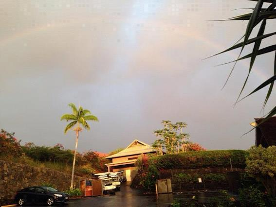
（２）運命の人を引き寄せる？→目の前に現れる！
パートナーがほしい方は、必読のコーナーです。
運命の人に出逢うためには、どうすればいいか。
私の結論は、運がいい自分になって波動アップしてしまえばいい。そうしたら目の前に、偶然ふとした瞬間に現れます。
この時に気をつけてほしいのが、引き寄せようとエゴ（我欲）を立たせないことです。何が何でもと思うほど、独りよがりになっていきます。すると運命の流れが離れていくからです。
そうではなく、今の自分を波動アップさせて次元上昇させるんです。
あなたも経験がありませんか。自分の殻に閉じこもって、「なぜ？」「どうして？」と問うばかりで、「これがあれば幸せになるだろう」と考え続ける。
自分の外側ばかりに答えを探し求めつづけてしまう......。
その結果、これも違う、あれも違うと。
このような呪縛スパイラルから抜け出すためには、人には「同じ波動をもった人が寄ってくる」という事実に気づくことです。
欲しがる人には、欲しがる人が寄ってきます。
幸せを感じている人には、幸せを感じている人が寄ってくるんです。
波動は同調の原理が働きますので、自分がどんな波動を出しているのか、気づいてみてほしいんです。
ここは重要なので、さらっと流さないで気づいていただきたいと思っています。ですから、私も本気でお伝えします。
「恋人がいれば、寂しくならずに済むのに」と思っている人には、刹那的に寂しさを埋めてくれる人しかやってきません。寂しさを埋めて自分のエゴを満たす人は現れますが、心からのやすらぎを交わせる人とは出逢えないのです。
「お金がほしい。お金があれば幸せになれるのに」と思う人のところには、同じようにお金を欲しがる人が寄ってきます。ということは、お金がない人を引き寄せることになるんです。
何かがなければ幸せになれない、条件を満たさなければ幸せになってはいけない、そういう思い込みが悲劇を生んでいくのです。
「ない」ことにフォーカスし続けると、どんどん「フォー・ミー」になって周りが見えなくなっていきます。
具体的にイメージしてみてください。
血眼になって恋人探しを繰り返す人を、あなたは好きになれますか？
必死な形相で、「私と付き合ってください！」と言われたら、どう思うでしょうか。
余裕がなく、自分が叶えたいことを優先し、相手の話をまったく聞かない人......そんな人は、魅力的に感じるでしょうか。
人もお金も、豊かな気持ちでいるところに寄ってくるものです。
今あるかないかなんて、まったく関係がありません。
今の自分がどんな波動を出しているのかに気づいて、投げかけるものを変えてしまえばいいんです。
欲しがるほど、先に出すのを忘れます。
出すのが先で、入ってくるのは後からです。
あなたは、自分がどんな波動を出しているのか気づいていますか？
波動には、同調の原理が働きます。
人もお金もご縁のすべてが、選ばれるからこそ豊かになるんです。
自分から選びに行く必要はありません。人から選ばれるような自分になれたら、ご縁が向こうからやって来るのですから。
だから、努力は必要ないのです。
たとえば、婚活だってそうです。
結婚のための条件を相手に要求して、要求を満たす相手を探し求める。
仮に条件が合ったとしても、自分のキャラクターや人柄を押し殺して迎合しながら、幸せな結婚生活を送れると思いますか。
本音を交わしたくても、本音が言えない関係はどうなんでしょう。
私のクライアントで、結婚したり恋人ができたりした人たちは、皆さん同じことを言います。
「引き寄せたんじゃありません。目の前に現れたんです」と。
引き寄せるというのは、今までの時系列の延長上に出てくる現象です。
目の前に現れるというのは、今までの時系列とはまったく関係なく出てくる現象です。
これはどういうことか、説明しますね。
波動アップして次元上昇していくと、ある日を境に時空が切り替わります。今まで連続的につながっていたことが、非連続的な現象として出てくるんです。
ですから驚きもするし、なぜなのか、考えてもさっぱりわかりません。
だけれど、今までやってきたこと、１つひとつの出来事（点）が有機的に繋がっていたのを、後から知ることになります。
後から振り返ると、点と点が線となって、過去から現在まで繋がっていたことに気づくのです。
ハワイで新婚旅行をすることになったクライアントもそうですし、セッションに参加して２週間ほどで彼氏ができたクライアントも同じです。
こういう方たちの共通項は、執着を外したことです。
「どうしても恋人が欲しい！」といった気持ちをリセットして、いったんゼロベースに持っていく。
「恋人ができたらいいけど、できなくても仕方がないかな。でも、できればできた方がいいな......」と思うように持っていくのです。
もしかしたら、曖昧で中途半端な状態に思うかもしれません。
ですが、執着を外すということは、すなわち、「囚われていない」ということです。
「どっちでもいいや」と思えれば、いちいち心が反応しないで済むので、いつでも余裕をもっていられるのです。
元気で朗らかで親切な人となって真摯に振る舞う。余裕が笑顔を生み、温かいオーラで包まれていく。大らかな人柄に、思わず話を聞いてもらいたくなる。
運命の人を躍起になって引き寄せようとしていた頃とは、まったく別人のようになっていく......この違いが、わかりますか？
ある日を境に時空が切り替わるのは、波動アップする中で宇宙貯金をしていくようなものです。チャリン！ チャリン！ と貯まっていくのが臨界点を超え、その時から、ガラリと周りの風景が変わるんです。
目の前に現れるのは、奇跡という現実です。
（３）たった一人との出会いが、人生を変える
たった一人との出会いが人生を変えるというのは、たとえば、師匠やメンターといった人を選ぶ時に言えることです。
我が強いと、自分が師匠を選んだということばかりに目がいきますが、相手からすれば、あなたは弟子として選んでもらっているわけです。
芸能界を見渡せば、たけし軍団など、わかりやすい例がたくさんあります。
可愛い弟子と思ってもらえるからこそ、守破離を実践できるわけです。
あれもこれもと手を出して、いろんな人の意見を聞きに行くような人は、師匠から可愛がってもらえるでしょうか。
もし自分が師匠の立場だったら、自分のアドバイスだけを素直に実践する弟子と、他にも師匠がいる弟子と、どちらを可愛がりたくなるでしょうか。
おいしいところ取りしようとしても、器用貧乏のままです。
長い目で見て結果的にうまくいかないのは、目の前の人に対する向き合い方がフラフラしてるからです。
ゆえに、自分の在り方が最も大切なのだと言っても過言ではありません。
私の場合、人生を変えてくれたのは小林正観さんです。
正観さんは、いわゆる、ゆるキャラで押し付けがましいところが一切ありません。本のイメージとは違って、講演会はダジャレと笑いが満載です。キラリと光るいい話は、目から鱗のエレクトリカルパレードのようでした。
正観さんの声には秘密があり、波動が高いので聞いてると眠くなるんです。講演会では最前列にいた人たちが、途中からグーグー寝てしまうという面白ハプニング（？）もあったそうです。
もう１つ正観さん関連の秘密をお知らせすると、一般書店にはない限定本がオススメということです。本屋さんでは買えない貴重な話が読めます。どれも面白いのですが、特に、『天才たちの共通項～子育てしない子育て論～』はママ必読です。
正観さんから教わったことは、心理学で学んだことをはるかに越えるものでした。
価値観のパラダイムシフトが起きて、衝撃を受けたものです。
正観さんから聞いたことを実践するたびに、本当に現実が変わっていったからです。
私の場合は、小林正観さんに絞って実践したことで、人生が大きく変わっていきました。
師匠もそうですが、私にとってSKYプロデュースのメンバーと知り合えたことは本当に大きなことです。
まさに、たった一人との出会いが、人生を変えることになったのです。
本を出版することができたのは、高橋恵治さんのおかげです。
何度もハワイに行けるようになったのは、一ノ瀬ゆみさんのおかげです。
細かい話は省きますが、二人と出会えたことで叶ったことが山のようにあります。
◇ＳＫＹプロデュースのメンバー３人近影、ホノルル国際空港にて
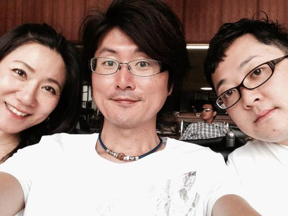
（４）波動アップしてパートナーと出会う秘訣はこれだ！
あなたは一人で、頑張ってきたのではありませんか。
もし一人でやることに限界を感じてるのであれば、まずは波動アップして応援と協力がやってくる自分になることです。
目に見えるものから目に見えないものまで、いろんな形で応援と協力はやってきます。
パートナーは、その中で、たまたま出逢ってしまうものなのです。
どこで出逢ってしまうのかわからないので、誰か一人を嫌いになれば、可能性も１つ消えることになります。
「これがあればいいのに」とご利益だけを期待して、それ以外をないがしろにするなら、同じように可能性はどんどん減っていきます。
自分から可能性を閉じてしまうのを避けることが大切です。
あれこれ取捨選択せず、宇宙の流れに身を任せて導かれるように生きる。
我を張らず、執着を手放して、役に立つような生き方をしていく。
役に立つという本当の意味がわかるようになると、タイミングが合ってきます。
喜ばれるように生きて、喜ばれるように使う。
人の役に立つには、些細なことで構わないんです。ちょっとした親切やいつもより笑顔になるだけでも、誰かの心を癒やすことができるからです。
素敵な笑顔を見て、思わず心が動いたことがありませんか。
パートナーは信頼関係が築ける仲間ですから、本音を交わせる相手です。
ＳＫＹ プロデュースの高橋恵治さんや一ノ瀬ゆみさんとは、それぞれが思っていることを本音で語り合える仲間です。仲間であり友人であり、もうひとつの家族のような存在です。ガハハ！ と笑い合える関係です（笑）
相手と本音で向き合うためには、まずは自分と向き合うこと。
波動アップすると本音の扱い方が上手になっていきますので、無理して何かを演じたり必要以上に自分を飾る必要がなくなります。
波動アップしてパートナーと出会うには、一人で努力するのをやめる。頑張るのをやめる。必死になるのをやめる。自分しか見ようとしない視点を変えてみるんです。
誠実に、真摯な気持ちで見てみると、目の前にパートナー候補が現れるんです。
一人の殻に閉じこもり自己完結していても、仲間やパートナーとは出逢えません。
相手にどう思われるか恐れて動けないのなら、自分自身を波動アップさせてしまえばいい。
自分一人では難しいのだったら、任せる勇気を出してみてはどうですか。
誰かに本気で頼るからこそ、見えてくるものがあるからです。
頼ることは恥ずかしいことではなく、本音を交わすためのトレーニングでもあるからです。
もしあなたに人生のピンチがやってきたら、これまでの在り方を修正する大きなチャンスです。
自分自身の在り方を見つめ直して、周りと関わっていくことで、見えてくるものがあるからです。
今まで見えなかった世界が、確実に広がっていきます。
もしかしたらあなたは、小さい頃から「人に頼るな。自分で努力しろ」と教わってきたかもしれませんが、それはおかしな話です。
本当は、人は誰もが頼ったり、頼られながら支え合って生きているからです。
ピンチな時ほど、周りはあなたのことをよく見ているものです。
もちろん、宇宙だって見ています。
そういう時ほど、その人の本当の人柄が出てしまうものです。
パートナーは、ピンチを一緒に乗りきれる相手でないと関係性が続かないのではないでしょうか。
たくさんの応援と協力の中から仲間が現れる。仲間の中からパートナー候補の人と出逢っていく。やがて一緒にやり続けてるうちにお互いの本音が見えてくる。ここからが最大のヤマ場を迎えるんです。
信頼関係を築ける相手だからこそ、パートナーになりうるわけです。
（５）自宅でレッスン！ 波動アップする前提とは
ここでは実際に、あなたにワークをしてもらいます。
ノートとペンを用意してください。２つの質問をしますので、書き出してみてくださいね。
（ワーク１）あなたにとって成功とは何ですか？ どうなりたいですか？
※以下は例です。
・お金持ちになって自由になりたい
・本を出版して有名になりたい
・仕事をやめて独立したい
・結婚して子供を生みたい
・海外へ遊びに行きたい
......など。
（ワーク２）本当の成功者は、毎日どんなことを考えて過ごしていると思いますか？
※以下は例です。
・すべてをありがたく感じる
・起こることをそのまま受けとめらる
・喜ぶ顔が見たいから、相手が喜ぶことをする
・幸せな言葉をたくさん使う
・思いっきり笑う
......など。
１つ２つではなく、箇条書きで、なるべくたくさん書き出してくださいね。
やってみましたか？ いかがだったでしょうか。
ノートに書き終えましたら、１つずつよく見て、その横に○と△をつけていってください。
○と△をつける際の判断基準は、「フォー・ユー＝○」か「フォー・ミー＝△」かのどちらかです。
やってみるとパンドラの箱が空いたように感じるかもしれません。
心の中に火が灯ったなら、あなたが波動アップする前提に気づいた証拠です。
（６）あなたがパワースポットになればいい
この本のタイトル、『あなたのパワースポットって誰ですか？』にもある通り、パワースポットは場所だけではなく、人のことでもあるんです。
むしろ人、人間の方が、パワースポットとしての影響が大きいんじゃないでしょうか。
なぜなら、人との出逢いはリアルな日常だからです。
ＳＫＹ プロデュースのメンバーは、私にとってパワースポットのような存在です。３人それぞれが同じように感じています。
もちろん、それ以外にも大勢の人たちが、パワースポットとして私たちを支えてくださっています。
ご利益を求めてパワースポットに行く。それもいいですが、ちょっと考えてみてほしいんです。
「自分自身が、どうやったらパワースポットになれるのか？」と。
パワースポットとは、言葉を変えると、人生を変えてくれる場所であり人です。そういう相手と出会えるかどうか。自分も、誰かに対してそういう自分になれるのか。
人との出逢いが、人生を激変させます。
パワースポットの心地よさは世界共通です。日本であれ、ハワイであれ、その他の海外であれ。
同じく、人だってそうです。波動が高い人から感じられるものは、世界どこへ行っても共通しています。
パワースポットのような人と出逢って、あなたもパワースポットのような存在になってみてください。
波動アップすれば、パワースポットがやってくるのです。
※波動について、詳しくは私の著書『スピリチュアル美肌革命』（クリエイターズ・パブリッシング）に書いておきましたので、３つの波動について知りたい方は読んでみてください。魂の波動、肉体の波動、精神（心）の波動を上げることで、自分自身をバージョンアップすることができます。
（７）もう１つの家族を作ろう
私は、天涯孤独になるところでした。
両親が亡くなり、一人っ子で、親戚づきあいもほとんどなかったからです。
ところが、波動アップという世界を知ってから、目の前に広がる世界が一気に変わっていったんです。
今思えば孤独にならずに済んだのは、出逢ってくれた仲間たちのおかげです。
どれだけパワースポットと呼ばれる場所へ行こうとも、場所は場所に過ぎません。
大きな恩恵は、人との出逢いとなってやってきます。
人との出逢いがあったからこそ、人生が切り替わっていったのです。
波動アップして、私は自分から投げかけるものを変えていきました。
普段使っている言葉もそうです。言葉の波動＝言霊の威力は思っている以上に大きく、宇宙は私たちの言葉を聞いているということを実感しています。
自分自身を波動アップさせると言葉が変わります。
言葉が変わると考え方も変わっていきます。考え方が変わるのですから行動も変わります。
行動が変われば、出逢いの質も上がっていきます。
出逢いの質が上がっていくと、人生が変わってしまうのです。
「フォー・ミー」、「フォー・ユー」という話をしましたが、本気の「フォー・ユー」の裏には、本気の信念があるんです。信念というブレない軸があるのは「integrity（誠実さ、真摯さ）」があるからこそです。
「ない」ことにフォーカスし続けると「フォー・ミー」で自分のことばかりになりますが、「ある」ことにフォーカスすると「フォー・ユー」でそこに人がいることがわかります。
人こそが、パワースポットなんです。
私たちは人からパワーを受け取りながら、毎日前へ進んでいこうとします。
時にはくじけたり、泣いたり、本音が言えなくて悩んでしまう時だってあるかもしれません。
私は心理カウンセラーとして活動する中で、悩みにぶつかったときに最も辛いことは、誰にも相談できないことだと知りました。
悩みが深ければ深いほど、家族にだって言えないことがあります。
もはや私には相談する家族もいませんが、もう１つの家族と出会えたおかげで幸せに過ごすことができています。
ＳＫＹ プロデュースのメンバー、いつも良くしてくれる仲間たち、クライアントたちは、私にとってもう１つの家族です。
いろいろと思うことがあって、離れていく人がいても構いません。人として誠実に、関わり合いを大切にできる人とだけ、お付き合いしていくと決めているからです。
誠実さは、言葉だけでなく行動を見ていればよくわかるのは世の常です。
どういう人とお付き合いするかを決めることによって、自分の在り方も同時に決まります。
人は自分を映し出す鏡なので、付き合いたい人を決めることで、自分自身がどういう自分であるべきかも決まっていくということです。
自分の「役割」に気づいて、それをやると「決める」。すると宇宙から味方されて、願いが叶っていくようです。
もう１つの家族を作るとは、信頼し合える関係の仲間を作るということです。
私が知っている方々は、自分の家族のように、同じように大切にするもう１つの家族というグループを持っています。
あらゆる分野で活躍してる人たちのグループですから、知りたいことがあれば即効解決するわけです。
信頼し合っていろんなことを話し合える関係は、ものすごく楽な人生と出逢っていくようなものです。
一人で切り開こうとする人生とは大違いで、お互いに助けあう互助作用のようなシステムが働くからです。
もう１つの家族を作りたくなったら、これから一緒に素敵な出逢いを重ね合わせていきましょう。
自分の力だけでできることは、たかが知れてます。
そこを越えられるのは、ありがたいパワースポットみたいな存在があるからです。
あなたも、もう１つの家族を作ってみませんか。
◇お釈迦様と弟子の会話
弟子：よき仲間を得るということは、聖なる道の半ばまで来たと思ってよいのでしょうか。
お釈迦様：聖なる道の半ばではない。聖なる道のすべてです。
どこに行くかではなく、誰と行くか。
何を食べるかではなく、誰と食べるか。
何を歌うかではなく、誰と歌うか。
そこに仲間がいてくれるから、お互いに笑いながら「ありがとう」を言い合えます。
よき友人との出会いは、人生のすべてです。
生まれてきて、本当によかった（笑）
（８）シークレットトラック
時代の流れは、いいものをシェアして幸せに生きる方向へ切り替わってきてます。自分だけが成功したいと思っていても、成功できない時代です。
成功の定義が、大きく変わってきているからです。
すべて自分でやろうとしなくていいんです。
あなたに素敵な仲間がいて、パートナーができたとしたら。不得意なところを任せて、自分が得意なところをやっていくこともできます。
もちろん、落ち込んだときに話を聞いてもらうことだってできます。
ご縁がいくつも重なり合って、いつか感謝で形をつくる日がやってきます。
その人と一緒にいるといいことが起こる。
まるでパワースポットと同じような効果をもたらすその人と出会えたからこそ、得られるものがある。
波動で共鳴しあう大切な仲間は、一生ものの財産です。
あなたの人生を変える、パワースポットは誰ですか？
スピリチュアルな生命エネルギーに満ち溢れているパワースポットは、本来、人間が持っているスーパーナチュラルな感覚を蘇らせてくれます。
細胞の１つひとつに、素晴らしいパワーを与えてくれるのです。
エネルギーに満ち溢れ、栄養を生み出し、大いなる恵みを受けることができます。ストレスの原因となるネガティブな波動を寄せつけず、解放や癒やし、安らぎを与え、穏やかなエネルギーを感じ取ることができます。
パワースポットへ行くと、直感が鋭くなったり、不思議な体験をすることが多くなってきます。
本来持っている能力に磨きをかけるためにも、ぜひパワースポットへ訪れてみてください。
大自然の波動とつながると、本来の感覚が呼び覚まされていきます。
また、あなたがパワースポットのような素敵なパートナーと出逢ってもらえたら幸いです。
おわりに
『あなたのパワースポットって誰ですか？』と題して、人生を変える！ 恋愛に効く！ 波動アップしてパワースポットと出逢う方法をご紹介しました。
波動の高さは理屈で考えるものではなく、全身で感じ取るものです。
ハワイの空港へ降りた瞬間にふわっと感じるあの感覚といったらわかりますでしょうか。
海外とのご縁が続く日々を過ごしてます。
世界中のパワースポットを回りながら、そこで見たことや経験したことを日常生活に生かすようにしています。
すると不思議なことに、好循環スパイラルが大きくなっていくのです。
時空が切り替わるというのは、気づかなかったレイヤーが重なっていくようなものかもしれません。
そして、目の前に仲間たちがいるからこそ、今日も生きていて幸せを感じられるのです。
普段の私は、心理カウンセラーとして活動しながら、SKYプロデュース合同会社代表としても活動しています。YouTubeと電子書籍を活用した魅せ方プロデュースに興味がある方は、ぜひお声がけください。
今回、こうして私の思いを本にすることができたのは、さまざまなご縁が重なり、誠実で親切な思いに導かれていったからのように思います。
関係各位に対して、心からの感謝を申し上げます。
最後まで読んでいただきましてありがとうございます。
あなたとのご縁に感謝します。
いつかどこかで、あなたとお会いできるのを楽しみにしています。
神岡シンゴリス
最後までお読みくださったあなたへ、スペシャルプレゼントをご用意しました！
本の中に出てくるハワイ島のスピリチュアル体験について語った動画を、ハワイのホノルルで収録してきました。
動画の中に出てくる内容は、以下の通りです。
・ハワイで感じる波動エネルギー
・アメリカ最南端のサウス・ポイントで体が軽くなる
・カイルア・コナのアフエナ・ヘイアウ
・ハワイ島の曇りはハワイらしい感じ
・ワイコロアのペトログリフは時空の扉のよう
・女神ペレがいるケラウェア火山でしちゃいけないこと
・ケラウェア火山でメガネ曇るわぁ＆元気になる話
・ハワイ火山国立公園のサーストン・ラバ・チューブ
・事前にYouTubeで見た江原啓之さんの動画について
・指先から納豆の糸（笑）が出た時の話
・なんで関西弁？
・パワースポットで何を感じたのか
・犬の尻尾みたいな手触りの植物
・日本の屋外セッションでやる「あること」とは
・ふわぁ～のシンクロ（驚＆笑）
ハワイ好きな方はもちろん、スピリチュアルが大好きな方も含めて、ハワイの波動をぜひこの機会に感じてみてください。
本の内容をフォローする意味もありますので、ぜひ左のリンクをクリックして申し込み、じっくりとご覧ください（全２回）。
著者紹介
神岡シンゴリス（かみおか・しんごりす）本名：神岡進吾
リーディング心理カウンセラー
SKYプロデュース合同会社代表／プロデューサー
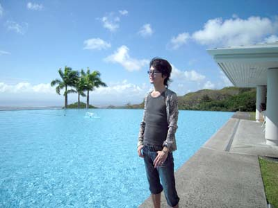
2013年秋リリースの著書・電子書籍『スピリチュアル美肌革命』はアマゾン kindle総合4位、2部門で1位を獲得。
音楽業界出身の心理カウンセラー。13年間ソニー・ミュージックエンタテインメントに勤務し制作・販促・営業を経験。MEJAで社長賞受賞、洋楽コンピでオリコンTOP10入りなど、メジャーレコード会社で夢をすべて叶える。音楽畑を卒業後、経営に興味を持ち人間心理に着目。衛藤信之氏が主催する日本メンタルヘルス協会で心理学を学び研究コース終了。恋愛心理からスタートしたカウンセリングは失恋から立ち直るYahoo正式登録サイトに至り、現在もBEST３にランキング。個人セッションやセミナー活動を通じてメンタル面からきれいになり若返ると評判のカウンセリングを主催。述べ2,000人以上の実績をもち、アラフォー世代の女性を中心に"喜びを満たすマスターキー"と好評を得る。近年は口コミがハワイまで広がり、毎年現地でグループセッションやワークを通じてメンタルラグジュアリーの世界を伝えている。
札幌生まれ。中央大学理工学部卒業。Ａ型の射手座。趣味はトイレ掃除とお酒と美肌を保つこと。小林正観、スガシカオ、石田衣良の世界観をこよなく愛する。「目に見えない力から応援される人」と「応援されないように生きてしまう人」がいることを波動の法則から実感する。母の死と直面して以来、不思議な力が起こす奇跡をいくつも体験する。。
◇神岡シンゴリス公式サイト
http://www.shingoris.com/
◇facebook
https://www.facebook.com/shinngoris
=========================
■YOUTUBE公式チャンネル■
=========================
これまで公開してきたノウハウだけではなく、ハワイの模様やプライベートも全てこのチャンネルに凝縮されています。
→ http://www.youtube.com/user/shingoris/
あなたのパワースポットって誰ですか？
発行日：2014年7月7日 初版発行
著者：神岡シンゴリス
制作：株式会社クリエイターズ・ジャパン
発行人：高橋恵治
発行：クリエイターズ・パブリッシング
発売：株式会社クリエイターズ・ジャパン
〒160-0023 東京都新宿区西新宿7-6-5
グローリア初穂生沼ビル603
TEL & FAX 03-6908-7145